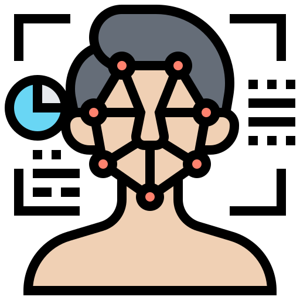
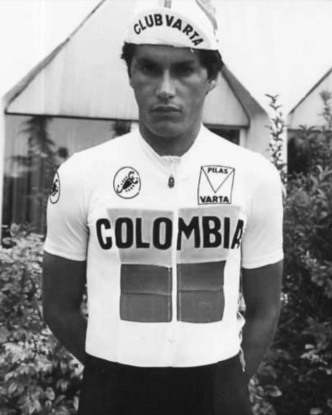
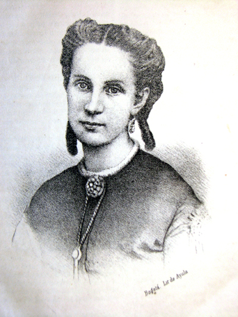
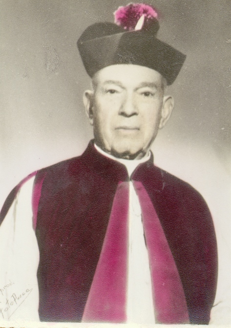
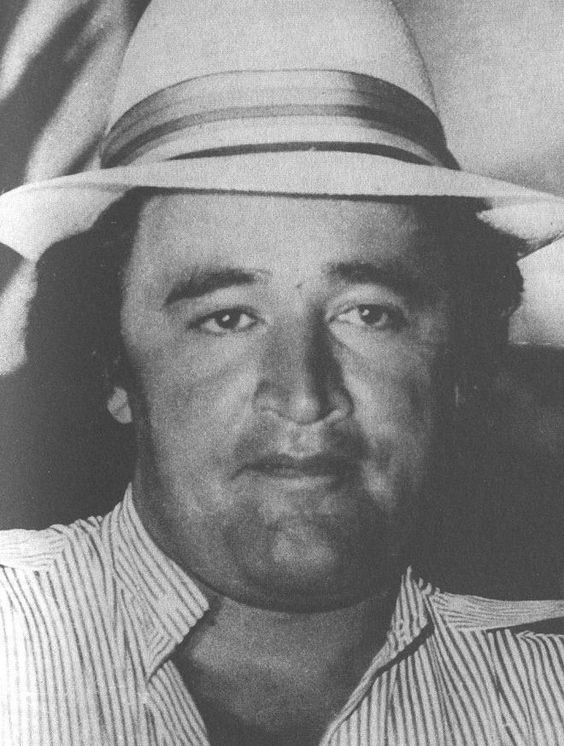
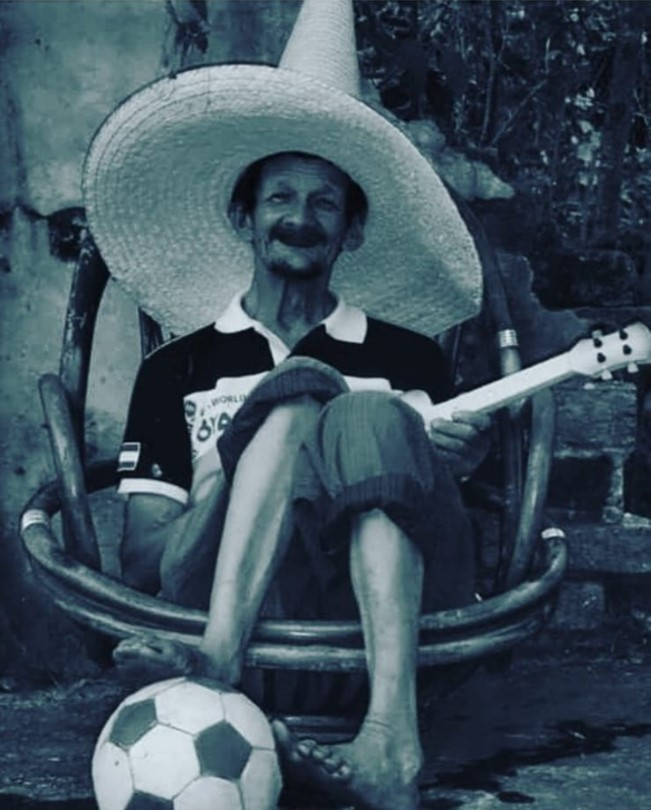

Habitantes
Habitantes Habitantes
La población del Municipio de Pacho, según el DANE 2015, es de 27.179 habitantes, de los cuales el 52,6% viven en la zona urbana y 43,4% en la zona rural, la diferencia es de 3.575 habitantes, es decir en la población urbana es mayor a la rural en un 9,2%.
Con relación a la población por grupos de vida, se tiene que el mayor número de habitantes
es de población adulta, por lo que se hace necesario un esfuerzo alto en actividades económicas productivas.
 Pachunos renombrados
Samuel Cabrera Castañeda
 Samuel Cabrera Castañeda (Pacho, Cundinamarca, 15 de agosto de 1960 - Pacho, 21 de marzo de 2022) fue un ciclista profesional colombiano, de gran actuación en América Central y en Europa, participando en seis ediciones del Tour de Francia. Fue profesional entre los años 1985 y 1989. Cuajó buenas actuaciones en el Tour del Porvenir y en el Clásico RCN.
Samuel Cabrera logró conquistar 3 Palmáres del ciclismo latinoamericano, en 1980 conquistó la Vuelta a Guatemala, en 1982 conquistó la Vuelta a Costa Rica y en 1988 logró el primer puesto en la etapa de la Vuelta Américas.
Isabel Bunch de Cortés
 Distinguida dama de la sociedad colombiana en el siglo XIX, poeta, escritora y traductora. Nació en la Hacienda de La Mesa de Pacho (Llano de la Hacienda) el 24 de abril de 1845. Hija del banquero, de origen inglés, Sir Robert Henry Bunch Woddside, propietario de La ferrería de Pacho e impulsor por excelencia de la naciente industria del hierro del país. Gracias a su familia, a la educación que recibió, el gusto por las letras y los viajes que pudo realizar, fue considerada como una conocedora excepcional de la literatura inglesa y francesa.
Monseñor Misael Gómez Torres
 Ilustrísimo sacerdote. Nació en un hogar noble y cristiano en Tibirita en 1880. Fue Párroco de la Paz de Calamoima, Vergara, San Juan de Rioseco y durante cuarenta y tres años Párroco del Municipio de Pacho. En 1930 tomó bajo su dirección pastoral el Colegio Parroquial de San Antonio que funcionaba con Educación Primaria. En 1940, le cambió el nombre por el de Pío XII en honor y memoria del Pontífice de ese tiempo. El pueblo de Pacho lo amó inmensamente como a su Pastor por su gran bondad. Sirvió a su feligresía sin distinción de clases y a su superación moral y material consagró su actividad y sus desvelos. Construyó la planta física del Colegio Pio XII sección B y luchó por hacer de este Colegio un modelo para la Región de Ríonegro. Además donó el lote para la construcción del Colegio de la Presentación sede actual del Colegio Pío XII, sección A. Vivió siempre preocupado por el bienestar de Pacho. Los pachunos lloraron su muerte el 4 de octubre de 1967 a la edad de 87 años después de una breve enfermedad. Sus restos reposan en el centro del Templo Parroquial.
Gonzalo Rodríguez Gacha
 José Gonzalo Rodríguez Gacha (Pacho, Cundinamarca, 14 de mayo de 1947 - Tolú, Sucre, 15 de diciembre de 1989), apodado «El Mexicano», fue un narcotraficante, terrorista, paramilitar y criminal colombiano, cofundador y cabecilla del Cartel de Medellín. De origen humilde, Rodríguez Gacha amasó su fortuna durante los años 1970 y principios de los años 1980 a través del tráfico de cocaína hacia Centro y Norte de américa. Tras la creación del Cartel en 1976, los medios de comunicación colombianos lo consideraron el «líder del ala militar» de dicha organización y su «Ministro de guerra». Más de 1.000 muertos fueron atribuidos a su nombre. Contó con su propia fuerza paramilitar, entre guardaespaldas y sicarios, con cerca de 2.000 miembros y fue considerado por la revista Forbes como uno de los hombres más ricos del mundo en 1988.
Tito
 En la cultura popular del pueblo, "Tito" es un habitante que ronda las calles del municipio interpretando una armónica (instrumento de viento) en busqueda de dinero para poder adquirir sus tan apreciados juguetes chillones; los cuales coleccionaba, esto lo hacía debido a que el tenía una personalidad y actitud de niño por un problema evidentemente cognitivo.